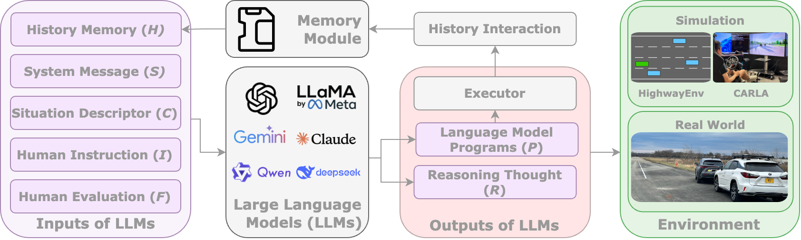

大規模言語モデル（LLM）の急速な普及と目覚ましい発展に伴い、LLMを自動運転技術へ応用することへの関心と需要が高まっている。自然言語理解および推論能力に裏付けられたLLMは、知覚・シーン理解からインタラクティブな意思決定に至るまで、自動運転システムの様々な側面を強化する可能性を持つ。本論文は、まず自動運転のための大規模言語モデル（LLM4AD）という新しいコンセプトを提案し、次に既存のLLM4AD研究をレビューする。さらに、LLM4ADシステムの命令追従能力と推論能力を評価するための包括的なベンチマークとして、LaMPilot-Bench、CARLA Leaderboard 1.0シミュレーションベンチマーク、多視点視覚的質問応答のためのNuPlanQAを提案する。加えて、クラウドベースおよびエッジベースのLLMデプロイを検討し、個別化された意思決定とモーション制御を実現する実車実験を実施する。さらに、言語拡散モデルを自動運転に統合する将来のトレンドとしてViLaD（Vision-Language Diffusion）フレームワークを探索する。最後に、レイテンシ、デプロイ、セキュリティ・プライバシー、安全性、信頼・透明性、個別化といったLLM4ADの主要な課題を論じる。
大規模言語モデル（LLM）の近年の発展は、多数の最先端技術を強化し、幅広い応用領域にわたる重要な進歩をもたらしてきた。その応用は、文書修正や情報抽出などの古典的な自然言語処理（NLP）タスクから、LLMベースのエージェントや評価フレームワークといった新興シナリオまで多岐にわたる。
代表的な応用として、自動運転へのLLMの採用（LLM4AD）が挙げられる。この分野では様々な先進アルゴリズムが継続的に自動運転技術を強化しており、LLMの潜在能力を活用してイノベーションと効率化を推進している。これらのモデルは、高レベルの意思決定プロセスから詳細な低レベル制御まで、自律システムに貢献できる。
高レベル側では、LLMは走行モードや意思決定プロセスの調整に積極的に関与できる。例えば、乗客が「友人を待たせたくない」と抽象的に緊急性を表現するシナリオにおいて、LLM4ADシステムはこれらの感情を解釈して車両の制御戦略を適宜調整し、現在の走行気分に合わせることができる。一方、非LLMベースのシステムは曖昧な表現だけから人間の意図を正確に把握・解釈する能力に欠ける。さらにLLMベースのシステムは、継続的な学習能力により高い個別化の可能性を提供し、個々の好みに適応して異なるユーザーの運転体験を向上させる。また、LLMは継続的な運用を通じた経験の蓄積によって、専門家のように運転できる知識駆動型システムを発展させる可能性も持つ。
低レベル側では、LLMはチューニングおよび制御プロセスで重要な役割を果たす。LLMは特定のシナリオを分析し、収集した情報を数学的表現に変換して低レベルコントローラを誘導する能力を示している。また、LLMはコントローラからの入力データを受け取り、制御ループの有効性の分析を支援するパフォーマンス更新を提供し、改善の提案や問題の検出を通じて全体的なパフォーマンスを向上させることができる。
従来のモジュール型自律システムへのLLM応用を超えて、エンドツーエンドシステムにおいても重要な役割を果たす。強力な推論とマルチモーダル理解能力を活用して、LLMはセンサーデータと自車状態を直接処理し、計画軌跡と詳細な制御行動を生成できる。このLLM駆動パラダイムは、産業界と学術界の両方から注目を集めている。
LLM4ADの新興発展は重要な問いを提起する。なぜLLMが自動運転で普及し、LLM非統合システムと比べてどのような優位性があるのか。現在の研究に基づけば、LLM統合の説得力ある優位性として以下が挙げられる：
本論文の構成は以下の通りである。第II節ではLLM4ADフレームワークのコンセプトと主要要素を紹介する。第III節ではLLMを自動運転システムに統合する既存研究をレビューする。第IV節ではLLMの性能を様々なタスクで評価するための公開ベンチマーク（データセット、評価指標、ベースラインモデルを含む）を確立する。第V節と第VI節では実車プラットフォームでのフレームワーク実装を示し、走行・個別化性能を検証する広範な実験結果を論じる。第VII節では自動運転への大規模言語拡散モデル活用の将来のトレンドを探索する。第VIII節では現在の課題を分析し有望な研究方向を概説する。第IX節では本研究の主要な貢献と知見をまとめる。
このセクションでは、LLMが自動運転システム内の意思決定「脳」として機能するパースペクティブを紹介する。提案するフレームワークでは、LLMは知覚やローカライゼーションモジュール（車両の「目」）を直接変更するのではなく、これらのモジュールからの出力を参照として高レベルの意思決定を誘導する。このデータを処理することで、LLMは十分な情報に基づく意思決定を強化し、大幅なパフォーマンス向上をもたらす。下流では、車両の制御モジュールが「手」として機能し、LLMベースのプロセスから導出された走行方針を実行する。
LLM4ADフレームワーク全体を図1に示す。人間は命令Iと評価/フィードバックFを提供する。これらは過去のメモリH、システムメッセージS、コンテキスト情報Cとともに、LLMへの入力として機能する。メモリモジュールは異なるユーザーの対応する過去のインタラクションHを保存する。これらの入力を受け取ると、LLMは推論を行い、生成された言語モデルプログラム（LMP）またはポリシーPと推論の思考Rを含む出力を生成する。ポリシーPは環境での実装のためエグゼキュータに送られ、推論の思考はLLMがより論理的な走行戦略を生成するのを支援する。
人間の命令Iと評価Fは自然言語でLLMに直接入力される。Iは自律エージェントに対する人間の望ましい目標を表し、評価Fは実行された走行ポリシーの有効性に関するフィードバックを提供する。
システムメッセージSは、会話またはタスクの開始時にLLM4ADシステムに指示とコンテキストを提供する。これにより開発者はシステムが従うべき役割、制約、目的を明確に定義できる。自動運転タスクでは、SはLLMの動作方法を枠組みする高レベルのガイドラインとして機能し、タスク定義、交通ルールの遵守、決定状態の説明、最適化指標などの基本的な走行ロジックを定義する。
状況記述子は現在の走行コンテキストCを構造化された自然言語記述に変換する。その目的は、「あなたは双方向高速道路の最左車線にいます」や「50メートル前方に車両がいます」といった状況認識と包括的な走行シナリオ表現をLLMに提供し、適切な意思決定を可能にすることである。
メモリモジュールはユーザープロファイルを保存して走行体験を向上させる。人間がLLM4ADシステムを利用するたびに、そのユーザーに関連する過去のインタラクションHが記録される。この過去データはその後、ユーザーの好みの参照点としてLLMへの入力として送信され、ユーザー体験を改善するようシステムを誘導する。
LLMはフレームワークのコアモジュールとして機能し、すべての入力（過去のインタラクションH、システムメッセージS、状況説明C、人間の命令I、人間のフィードバックF）を受け取り、テキスト出力（生成されたポリシー/LMP Pと推論の思考R）を生成する。特にチェーン・オブ・ソート（Chain-of-Thought）プロンプティングが誘導信号として採用され、人間に似た推論と実際の走行考慮事項との整合を確保する。
「コードとしてのポリシー（Code as Policy）」のコンセプトに触発され、LLMの主要な出力は実行可能なコードからなる生成されたポリシーPである。これらのコードは環境内の自車エージェントの走行行動に影響を与える。新しい自然言語コマンドへの汎化能力を持ち、走行コンテキストに応じて曖昧な言語的説明（例：「急いで」「左折して」）から正確な数値（例：速度）を提供できる。
チェーン・オブ・ソートプロンプティングにより、LLMはプログラムコードだけでなく、解決策の背後にある思考プロセスのステップバイステップの説明も生成する。これらの思考の連鎖Rは、決定の背後にある推論を解明する（例：「コマンドが『急いで』なので、目標速度を上げます」）。出力の思考Rは生成されたポリシーPに付随し、特定の走行コンテキスト内で自然言語コマンドがどのように解釈されて正確な制御値を生成するかについての洞察を提供し、システムの透明性と解釈可能性を向上させる。
エグゼキュータはLLMのテキスト出力と自動運転ポリシーとのギャップを橋渡しする。生成されたポリシー/LMP Pを受け取り、対応する環境でそれを実行し、コードが自車の状態と対話して意図した行動を実際または仮想の設定でデプロイできるようにする。
このセクションでは、自動運転にLLMを応用する既存研究を、学習方法、パイプライン設計、評価方法論、デプロイプラットフォームの4つの側面からレビューする。学習側では、教師ありファインチューニング（SFT）とそのパラメータ効率的な変種、プロンプトエンジニアリング戦略、検索拡張生成（RAG）、模倣学習、人間や環境フィードバックからの強化学習にわたる研究が存在し、静的な適応からクローズドループのポリシー最適化への進展を反映している。
最近の研究で使用されている学習方法を分析すると、教師ありファインチューニング（SFT）と検索拡張生成（RAG）が最もよく使用される技術であることがわかる。その他のアプローチとして、プロンプトエンジニアリング、模倣学習（IL）、強化学習（RL）が含まれる。
パイプラインの議論では、これらのフレームワークが入力モダリティ（テキストシーン説明、カメラ画像、LiDAR点群、ベクトル化された走行状態）をどのように選択・組み合わせ、自然言語説明、離散的なメタアクション、低レベル制御信号、軌跡、さらにはポリシーコードを含む多様な出力表現にマッピングするかを取り上げる。
LLM4ADフレームワークの性能評価はその有効性、堅牢性、安全性を評価する上で不可欠である。しかし、タスク、入力モダリティ、出力形式の多様性から、最近の研究にわたって標準化された評価方法論は存在しない。
一般的なアプローチとして、自然言語アノテーションで拡張された既存の自動運転データセットを使用する方法がある。例えば：
シミュレーション環境としてCARLAやHighwayEnvなどが使用されている。評価指標として、タスク固有の指標（成功率、衝突率、交通ルール違反）に加え、自然言語出力の質を評価するBLEUやROUGEなどの指標が使用される。さらにLINGO-Judgeは人間評価との0.95スピアマン相関係数を示す高度な訓練可能指標を提案している。
自動運転技術の急速な進歩には、特に歩行者や車両の予測不可能な行動に関連するエッジケースに遭遇する際のシステムの安全性と堅牢性を検証するための包括的な実世界テストと評価が必要である。
Tab.IIに要約されているように、様々な自動運転デプロイプラットフォームが異なる機能と専門化で開発されてきた：
ほとんどの既存の実世界デプロイ・テストフレームワークは特定分野への専門化により、LLM4ADフレームワークの包括的な評価能力に本質的な限界がある。この課題に対処するため、Zhou et al.はLLM4ADフレームワーク評価専用に設計された階層的な実世界デプロイプラットフォームを開発した。
このセクションでは、自動運転におけるLLMベースエージェントの命令追従能力と性能を評価するための2つの包括的なベンチマークを紹介する：
LaMPilot-Benchは、LLMが自然言語コマンドを解釈してHighwayEnvシミュレーター内で走行行動に変換する能力を評価するデータセットおよびベンチマークである。このベンチマークでは、「左車線に変更して」「速度を上げて」などの様々な自然言語命令に対してLLMベースエージェントの性能を評価する。評価指標には、タスク完了率、衝突率、命令追従精度などが含まれる。
CARLA Leaderboard 1.0ベンチマークは、より現実的な都市走行シナリオでLLM4ADシステムの性能を評価する。CARLAシミュレーターを使用して、交差点、車線変更、歩行者回避などの多様な走行シナリオでの性能を測定する。このベンチマークにより、LLMエージェントが複雑な都市環境でルートを完了し交通法規を遵守する能力を定量的に評価できる。
NuPlanQAは多視点視覚的質問応答ベンチマークであり、Nuplanデータセットを基盤として構築されている。このベンチマークは、LLM4ADシステムが複数のカメラ視点からの視覚情報を理解し、走行シナリオに関する質問に正確に答える能力を評価する。視覚と言語の統合的な理解を測定するための質問と回答のペアで構成される。
LaMPilot-BenchデータセットとCARLA Leaderboard 1.0ベンチマークは、LLMベースエージェントの自動運転における命令追従能力と性能を評価するための包括的な評価フレームワークを提供する。実験は、人間のフィードバックとドメイン固有のAPIと組み合わせたLLMが自動運転車の意思決定能力を強化する可能性を明確に示している。
しかし、両ベンチマークで見られる顕著な衝突率は、実世界の走行シナリオの複雑さと安全要件を完全に捉えるためのさらなる研究の必要性を示している。ほとんどの失敗はLLM低レベル計画頻度のトレードオフに起因する。LLM推論は現在のコンテキスト情報に基づいており、周囲エージェントのすべての潜在的な将来の行動を考慮していないことが問題である。LLM推論のレイテンシにより、すべてのタイムスタンプでLLMを使用して推論することは不可能であり、これが将来の研究で対処すべき課題である。
これらの知見、特に最良モデルであるGPT-4（人間フィードバックあり）でさえ0.9%の非ゼロ衝突率が観察されることは、重大な安全ギャップを示している。現行世代のLLMはゼロショットまたはフューショット方式で使用した場合、直接的なリアルタイムモーション制御には十分に信頼できるとはいえない。この制限が、次のセクションで探索されるアーキテクチャ設計の主要な動機となっている：LLMは高レベルの非即時タスク（人間の好みの解釈、走行スタイルの個別化、コントローラパラメータの調整）に意図的に限定され、別の堅牢で低レイテンシの制御システムがリアルタイムの車両安全に関する最終権限を維持する。
LLM4ADシステムの有効性をさらに評価し実世界シナリオでの適用可能性を検証するため、LLMを実用的な自動運転システムに統合し、Talk2Driveと呼ばれるフレームワークを導入する。このシステムは優れたコマンド理解と推論性能を持ち、過去のインタラクションの記録を活用して個別化された走行体験を提供できる。
Talk2Drive（図4参照）は、クラウドベースのLLMを活用して自動運転車における人間のコマンドの個別化された理解と実行可能な制御シーケンスへの変換を可能にする革新的なアプローチである。クラウドサイドのLLMと車両サイドの動作が連携して機能する：
実世界実験には、知覚センサー、ローカライゼーションモジュール、通信モジュールを搭載したドライブ・バイ・ワイヤ対応の2019年型Lexus RX450hを使用する。Ubuntu 18.04上でROS Melodicとともにオープンソースの自動運転ソフトウェアAutoware.AIをデプロイし、マッピングとローカライゼーションには3D-NDT、軌跡追従にはPure Pursuitを採用する。AT&Tシムカードを搭載したCradlepoint IBR900シリーズルーターによる4G-LTE接続でネットワーク通信を実現する。
Talk2Driveシステムの性能評価のため、複数の参加者による実車走行実験を実施する。参加者はベースラインシステムまたはTalk2Driveシステムに対してランダムな音声コマンドを発する。バイアスを避けるため、参加者はどのシステムが使用されているかを知らない状態で実験する。
全参加者は現在の感情を反映してベースラインまたはTalk2Driveシステムにランダムな音声コマンドを発する。参加者は自律走行システムに不満を感じた際にいつでもテイクオーバーできる。実験中のpingレイテンシは200〜400msである。Talk2Driveシステムはベースラインと比較して低いテイクオーバー率と高い満足度を示し、個別化された走行体験の提供における有効性を実証した。
このセクションでは、個々の走行スタイルに対応するよう設計された、自動運転における個別化モーション制御のためのオンボードVLMを提案する。このアプローチは、Qwen-VLからファインチューニングされたコンパクトな8BパラメータのVLM（視覚言語モデル）を活用し、視覚情報（気象条件、道路タイプ、交通状況など）と音声コマンドを処理して各ユーザーの個別化された制御戦略を生成する。このVLMの小型スケールによりエッジデプロイが可能であり、コマンド解釈と推論能力を維持しつつ暗黙的な人間の命令を効果的に理解・応答できる。
知覚からモーション制御までの完全なパイプラインを含む従来のモジュールベース自動運転フレームワークを採用し、特にモーション制御レベルでの意思決定プロセスの強化に焦点を当て、制御性能を異なる人間の走行スタイルに適応させる。提案システムの目標は、音声コマンドIと視覚入力Vの両方をモーション制御プロセスのための実行可能な制御シーケンスに変換することである。
さらに個別化を強化するため、過去の人間-車両インタラクションを保存するデータベースを構築するRAGベースのメモリモジュールを実装する。システムが起動されるたびに、関連する過去のシナリオHのみが検索されVLMへの参照として提供される。各走行後、ユーザーは現在の状況に対して生成された制御ポリシーPについてフィードバックFを提供でき、これがVLMの推論プロセスを洗練させるのに役立つ。
オンボードVLMフレームワークは以下の3つの手順で動作する：
システムの性能を包括的に評価するため、安全で快適・信頼性が高く個別化された走行体験を提供する能力を評価する一連の実験を実施する。評価指標として、走行スコア（安全性、快適性、環境条件と人間命令との整合性を含む走行性能の測定）とテイクオーバー頻度（個別化能力の評価）を使用する。さらに、メモリモジュールの有効性を検証するアブレーション研究も実施する。
実験結果は、RAGベースのメモリモジュールを活用したオンボードVLMが従来システムと比較して走行スコアの向上とテイクオーバー頻度の低減を達成し、個別化モーション制御における有効性を実証している。
現在のVLMベースのエンドツーエンド自動運転システムは、逐次的な次トークン予測によって決定を生成する自己回帰アーキテクチャに依存している。このパラダイムは多くのNLPタスクでは成功しているが、実世界の走行シナリオの時間敏感で空間的に複雑な領域に適用した場合に根本的な制限を呈する：
これらの根本的な限界に対処するため、自動運転における大規模視覚言語拡散（LVLD）モデルへのパラダイムシフトを提案する。これらのモデルはマスク拡散生成パラダイムに依存し、完全にマスクされたシーケンスから始まり、そのマスクプロセスを逆転させるよう訓練されたモデルによって予測されたトークンで繰り返し埋めていく。
エンドツーエンド自動運転においていくつかの優位性を提供する：
ViLaD（Vision-Language Diffusion）は、エンドツーエンド自動運転にマスク拡散モデルを活用する新規アーキテクチャである。アーキテクチャは4つの主要コンポーネントで構成される：
推論時、モデルは完全にマスクされた決定トークンシーケンスから始まり、最終的な出力を生成するまで数ステップにわたって並列でマスクされたトークンを「アンマスク」する。これは知識の最良のコンテンポラリーエンドツーエンド自動運転LVLDシステムの初の実証であり、ベンチマーク包括実験から実世界車両デプロイまでの成功した実装を示している。
ViLaDはベンチマーク実験において、従来の自己回帰VLMベースのシステムと比較して推論レイテンシの大幅な低減と走行性能の向上を示す。並列生成によりリアルタイム意思決定能力が改善され、双方向推論によって複雑な走行シナリオでのより包括的なシーン理解が実現される。
インタラクティブ駐車と命令追従走行という2つのオンボードケーススタディにより実世界での適用可能性をさらに検証する。両ケーススタディは図6で示す同じ車両プラットフォーム（2019年型Lexus RX450h）にデプロイされる。インタラクティブ駐車では、ユーザーの自然言語コマンドに応じてViLaDが駐車の軌跡と制御を生成し、命令追従走行では様々な走行コマンドに対する応答性を検証する。
レイテンシは自動運転へのLLMデプロイにおける根本的な課題である。従来の自動運転システムがミリ秒レベルの応答時間で動作する一方、LLMの統合はシステム信頼性に慎重に対処すべき重大なレイテンシ上の問題を引き起こす：
これらのレイテンシ制約により、LLMが自動運転アーキテクチャで担える役割が制限される。衝突回避、緊急ブレーキ、即時障害物応答などのリアルタイム応答を必要とするクリティカルパス機能は、従来の低レイテンシ制御システムで引き続き処理される必要がある。
車両へのオンボードLLMのデプロイも重要な考慮事項である。クラウドベースのLLM APIは柔軟性とスケーラビリティを提供するが、安定したネットワーク接続に依存し、すべての走行シナリオで利用できるとは限らない。
自動運転車へのLLMデプロイは重大な計算資源の制限に直面する。自動車ハードウェアは通常、開発システムと比較して低い計算能力を持ち、モデル要件と利用可能なリソースとの間に実質的なギャップを生む。この制約はシステム性能のすべての側面に影響する。有望なアプローチとして：
LLMの自動運転システムへの統合は、重大なセキュリティとプライバシーの脆弱性を生む：
将来のシステムは、データ保持（例：「音声録音は文字起こし後すぐに削除」「インタラクションログは90日後に削除」）とユーザー制御（例：ログを無効化する「プライバシーモード」、保存されたプロファイルの確認・エクスポート・削除のための明確なインターフェース）に関する具体的なポリシーを実装する必要がある。
LLMが自動運転システムに統合される場合、安全性は常に最優先事項である。提案するLLM4ADコンセプトでは、LLM出力のハルシネーション（幻覚）の可能性と必要な反応時間のため、LLM自体が安全要件を直接処理しない。提案する解決策では、LLM出力が事前定義された安全範囲内に収まらなければならず、出力がこれらの制限を超えるか出力形式と一致しない場合は実行が自動的にブロックされるルールベースの安全保証メカニズムを採用する。
しかし、システムの安全性と信頼性を確保するには、広範な運用条件にわたる広範な検証が必要であり、エッジケースへのシステム応答のテスト、劣化した運用条件での動作の検証、フォールバックメカニズムの有効性の検証が含まれる。この技術的課題は、LLMが曖昧なユーザーコマンドを誤解して事故に貢献した場合の複雑な責任の連鎖といった法的・倫理的問題と内在的に結びついている。
自動運転システムへのLLM統合における重大な課題は、人間ユーザーと自律走行車の間の真の信頼と透明性の確立にある。主な問題として：
提案フレームワークでは、説明（出力の思考R）は実行可能なポリシー（P）と同時に生成され、車両のHMIディスプレイに表示されて人間がシステムの意図を理解できるようにする。ただし、説明の妥当性とポリシーの技術的正確さとの不一致を検出することは未解決の課題のままである。
LLMを統合して時間とともに個々のドライバーの習慣、好み、コミュニケーションスタイルを学習・適応する高レベルの個別化を実現することは、重要な技術的・安全上の課題も伴う：
本論文では、大規模言語モデルを自動運転に統合するための包括的なフレームワーク（LLM4AD）を提示した。全体的なコンセプトとアーキテクチャを紹介し、最近の進歩をレビューし、命令追従とマルチモーダル推論能力を評価するためのLaMPilot-BenchとNuPlanQAを含む標準化ベンチマークを提案し、シミュレーションと実世界環境の両方で広範な実験を実施した。実車研究は、個別化意思決定とモーション制御のためのクラウドおよびエッジLLMデプロイの実現可能性を実証し、人間の意図を解釈して多様な走行コンテキストに適応する能力を示した。
将来の展望として、ViLaD（Vision-Language Diffusion Models）をLLM4ADの有望な将来トレンドとして探索し、推論、計画、生成的シーン理解の新方向性を提供した。重要な進展にもかかわらず、リアルタイム推論、安全保証、説明可能性、個別化における課題は残っている。モデル効率、マルチモーダル推論、人間-自律システムのチームワークにおける将来の開発が、次世代自動運転車をよりアダプティブで解釈可能かつ人間中心のものにすることを可能にすると考えられる。